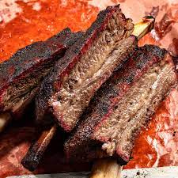

<h1>Beef Ribs</h1>

<h1>Beef-Ribs</h1>
<p>This recipe will be a great taste and will be ready in under an hour!</p>
<h2>Ingredients</h2>
<ul>
    <li>Beef Ribs</li>
    <li>Brown Sugar</li>
    <li>Garlic Salt</li>
    <li>liquid smoke</li>
</ul>

<h2>Steps</h2>
<ol>
    <li>Open ribs and take off fat/film</li>
    <li>Apply liquid smoke</li>
    <li>Apply seasoning in any order</li>
</ol>